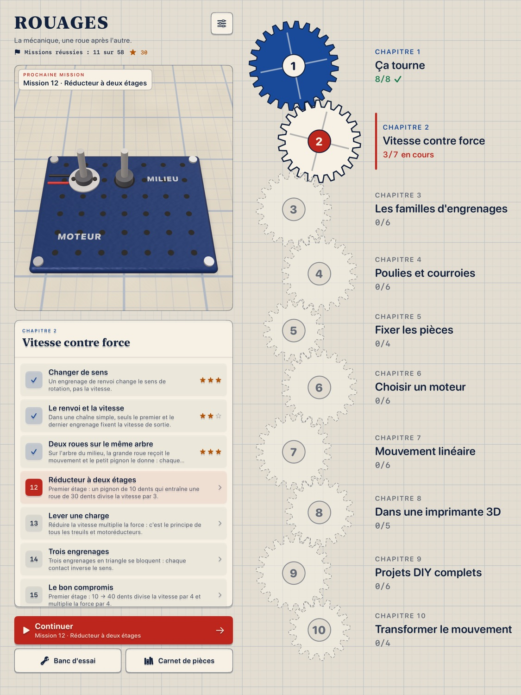
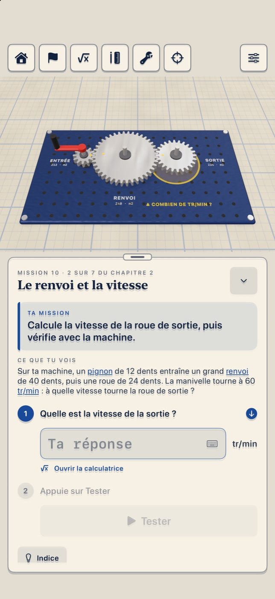
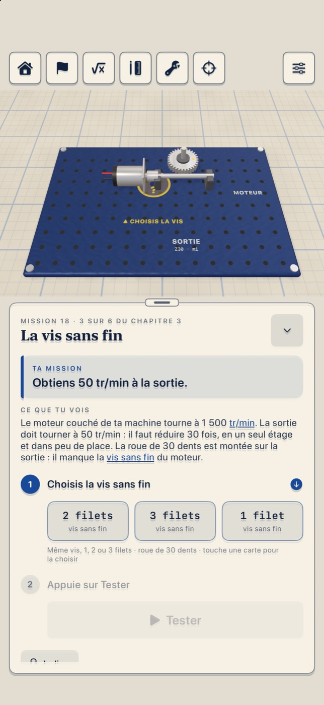
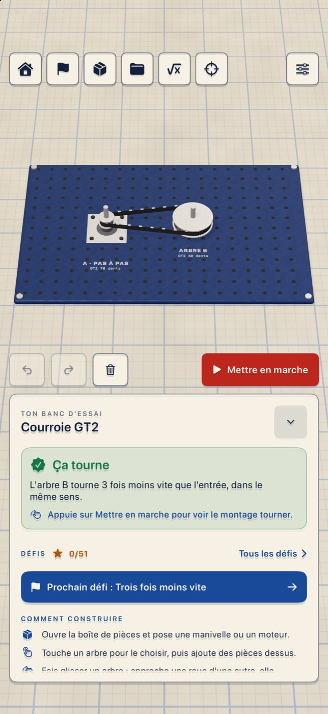
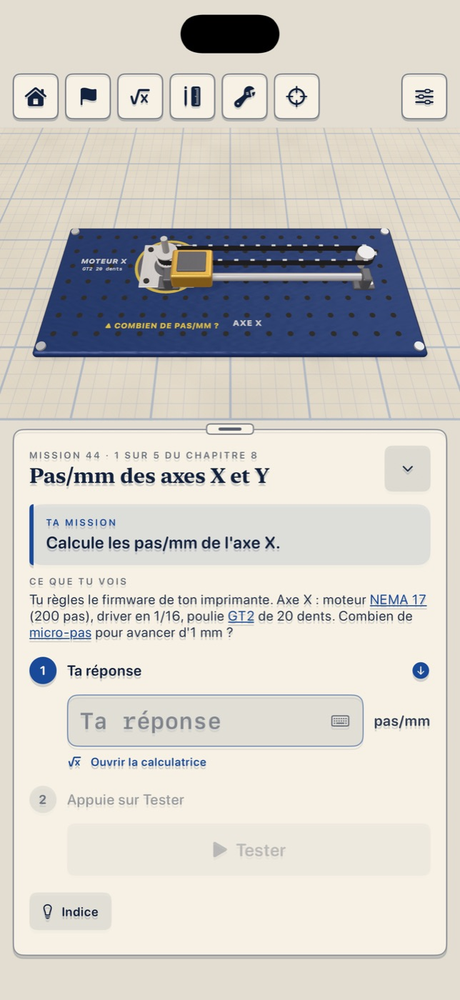

iPhone · iPad
La mécanique, une roue après l’autre.
Rouages t’apprend comment marchent les engrenages, les courroies et les moteurs. Tu tournes la manivelle, tu fais ton pari, et la machine te répond.
5,99 €achat unique, en France
Bientôt sur l’App Store
01 · Dix chapitres
Un train d’engrenages à faire tourner
Chaque chapitre réussi met une roue de plus en mouvement. Tu commences avec une roue et un axe ; tu finis avec les réglages d’une imprimante 3D.

02 · Engrenages
Compte les dents, trouve la vitesse
Une petite roue entraîne une grande : plus lente, mais plus forte. Tu fais le calcul, puis tu le vérifies sur la machine en tournant la manivelle rouge du doigt.

03 · Vis sans fin
Ça tourne ou ça coince ?
Choisis une pièce, fais ton pari et appuie sur Tester. Si la machine bloque, les pièces en cause passent en rouge et tu sais pourquoi.

04 · Banc d’essai
Monte ta propre transmission
Pose les arbres, les roues, les poulies et le moteur où tu veux. Mets en marche, lis les vitesses et le couple, puis relève les 51 défis du banc.

05 · Imprimante 3D
Jusqu’aux réglages de ton imprimante
Courroie GT2, poulie, moteur pas à pas : les derniers chapitres portent sur de vrais montages, des pas par millimètre au treuil.

Les dix chapitres
- 1Ça tourne
- 2Vitesse contre force
- 3Les familles d’engrenages
- 4Poulies et courroies
- 5Fixer les pièces
- 6Choisir un moteur
- 7Mouvement linéaire
- 8Dans une imprimante 3D
- 9Projets DIY complets
- 10Transformer le mouvement
Un achat, toute l’app
Toutes les missions, le banc d’essai, les cours et la calculatrice. Pas de publicité, pas d’abonnement, pas d’achat intégré. Le prix peut différer selon le pays.
5,99 €
Questions
Faut-il déjà connaître la mécanique ?
Non. La première mission part d’une roue et d’un axe, et chaque notion arrive avec son explication, ses schémas et un lexique.
Sur quels appareils ?
iPhone et iPad avec iOS 26 ou iPadOS 26, à la verticale comme à l’horizontale.
Faut-il un compte ou une connexion ?
Non. Rouages fonctionne hors ligne et sans compte. Ta progression et tes montages restent sur ton appareil.
Mes données sont-elles collectées ?
Non. L’app ne collecte aucune donnée. Le détail est dans la politique de confidentialité.